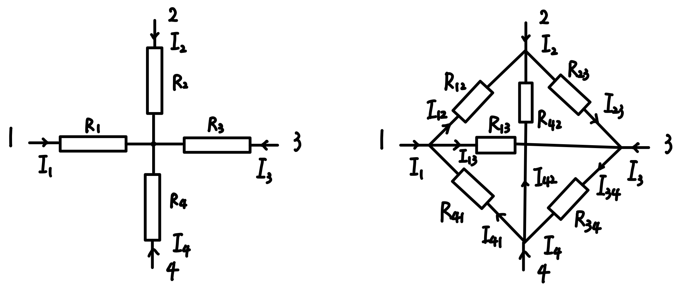

四端线性电阻网络的等效变换
$Y-\Delta$ 变换的推广
引入：三端线性电阻网络的等效变换
四端线性电阻网络的等效变换：

等效条件：已知 $\varphi_i(i=1,2,3,4)$（各点电势），使 $I_i(i=1,2,3,4)$ （各点流出的总电流）
在左图中，有方程：
由前三个方程得：
代入第四个方程得：
解得：
在右图中：
解得：
由等效条件，应有 $\forall \varphi_i(i=1,2,3,4),I_1$ 在左、右图中相等。
故有对于相同的 $\varphi_i(i=1,2,3,4)$ 在左右图 $I_1$ 中对应的系数相同，即：
可解得：
同理可得：
$Y \rightarrow \Delta$ 变换推广到 $n$ 端：
$\Delta \rightarrow Y$ 只有三端时才成立。